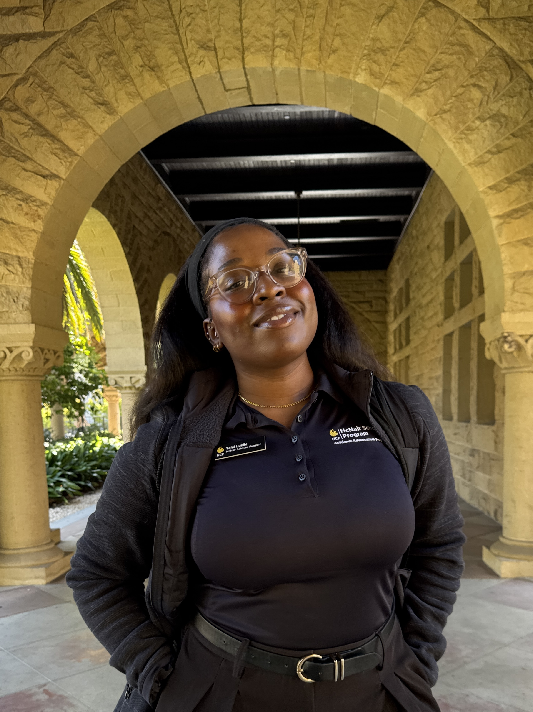

I study race, disability, and institutions.
I’m a sociologist interested in the lives of Black disabled children and young people from low-resource communities. I study how racism, ableism, and class inequality shape their experiences in schools, from decisions about disability and support to the opportunities available as they move into adulthood.

Lucileresearcher · sociology
of race & disability
What I keep coming back to
Who gets counted, and as what?
When I work with school records, I’m looking at the outcome of decisions made by teachers, clinicians, families, and school systems. Understanding those decisions is part of understanding the patterns in the data.
I want to know why some children are identified for services while others are overlooked, how race and class enter that process, and what happens after a student receives a label. Those questions connect my current studies of school records and service access to my broader interest in disabled young people’s experiences.
Methods →Current research
When Speech and Language Diverge
Racial and ethnic patterns in Florida speech and language impairment program membership, 2017–2025
Florida records Speech Impairment and Language Impairment as separate categories, but federal reporting combines them. Using eight years of records from all 67 Florida school districts, I examine whether combining the categories obscures differences in program membership among Black, Hispanic, and White students.
Explore the thesis →Intellectual trajectory
From speech-language pathology to sociology
I entered college planning to become a school-based speech-language pathologist. I hoped to work with Black and Latino children from low-resource communities, and studying special education soon raised questions about how schools decide who needs services.
Writing + recognition
Peer-reviewed · 2026
Partnerships and Progress
With Earlisha Jenkins Whitfield · Education Sciences, 16(1), 5.
Contact